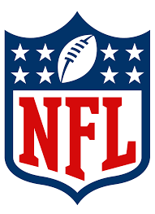
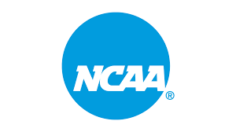

This year, the defending Super Bowl champion Kansas City Chiefs look to repeat as champions again. This season has plenty of storylines and drama. Through week one, the Jets have already lost their brand new quarterback and veteran leader Aaron Rodgers (torn achilles in 1Q of Monday Night's game againt the Buffalo Bills).
For scores and more information, visit the NFL website!
Arguably the country's favorite form of football, college football has many different forms and stories this year. Whether it be the craziness of conference realignment (the Big Ten is now looking like the Big 20!), Deion Sanders completely turning Colorado Football around, or just enjoying the fun of college level sports, college football has something for everyone. Here at home, the Millikin University Big Blue compete in one of the most competitive NCAA Division III conferences in America in the CCIW.
To follow all things college football, click here. For all the information you need for the Millikin Football team, click here.
Illinois High School Football is well underway in the State of Illinois, and the excitment is once again high. Many area teams in the Decatur and Macon County area are competing and playing week in and week out. It may seem crazy, but in just five short weeks, area teams will be competing in the playoffs for a chance to be crowned State Champions!
Illinois High School Football has many different good resources, and I have attached them all below.
Edgy Tim NUIC Football Coach Big Pete IHSA